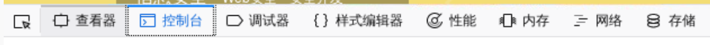
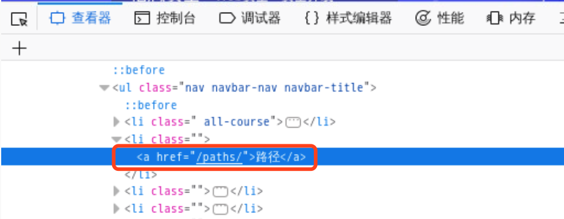
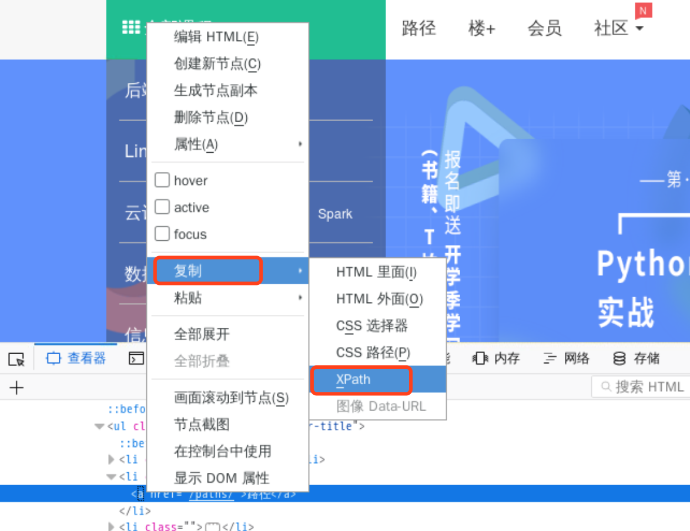
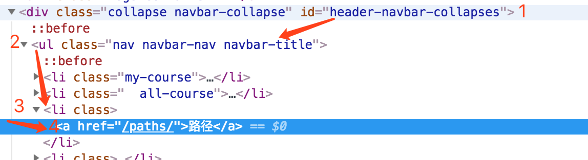
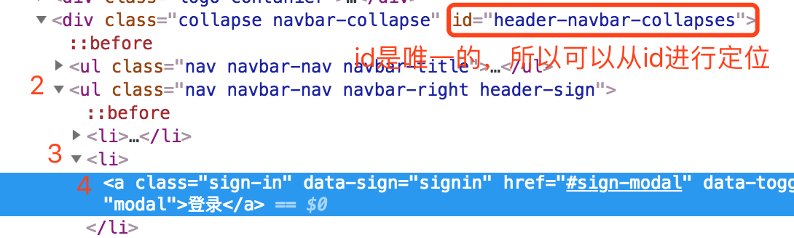
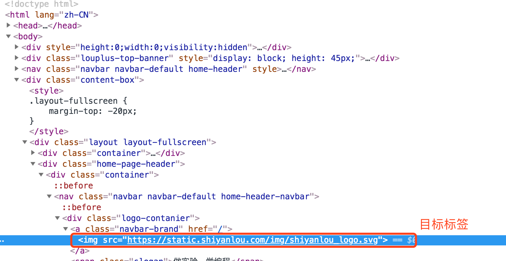
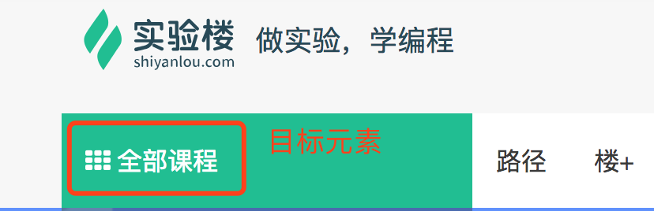
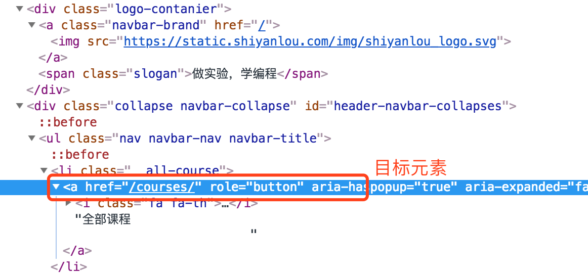

Selenium-2 xpath
xpath 使用路径表达式在 XML 文档中进行导航。也就是说，当我们用 xpath 进行定位的时候，代码会根据你写的 xpath 一层一层的进行定位。xpath 就像是一个地图，指引代码找到它的目标元素。
浏览器获得xpath
点击屏幕左下方的所有应用程序>互联网>Firefox 网络浏览器就可以打开 Firefox 浏览器，然后进入实验楼 (www.shiyanlou.com) 网站。现在要对“路径”按钮进行定位：
点击键盘的 F12，这时浏览器会弹出开发者工具：

最左侧的方框+小箭头叫做元素选择器。单击这个元素选择器以后，去页面点击想定位的元素——“路径”：

此时定位到的标签，就是“路径”按钮对应的 HTML 标签了。然后将光标移动至该标签处，单击鼠标右键，选择复制，可以看到，这里可以选择复制 css 路径（即 css_selector)，也可以选择复制 XPath。

这里我们选择 XPath，然后在文本编辑器里就可以粘贴复制的 XPath 了：
1 | //*[@id="header-navbar-collapses"]/ul[1]/li[3]/a |
XPath介绍
| 表达式 | 描述 |
|---|---|
| / | 从根节点选取 |
| // | 从匹配选择的当前节点选择文档中的节点，而不考虑它们的位置。 |
| . | 选取当前节点 |
| .. | 选取当前节点的父节点 |
| @ | 选取属性 |
| * | 匹配任何元素节点 |
根据上面的表格，我们分析一下这个 xpath：//*[@id="header-navbar-collapses"]/ul[1]/li[3]/a
//即从当前选择的文档节点开始*匹配任何元素节点[@id="header-navbar-collapses"]通过id属性确认当前文档开始的节点位置，即从id为header-navbar-collapses的位置开始/这个斜杠没有打头，所以这里意思是下一级ul[1]这里方括号中的1表示第一个ul标签。注意：xpath 中的标签数从 1 开始li[3]表示第三个li标签

再举一个例子
现在来看“登录”的 xpath：//*[@id="header-navbar-collapses"]/ul[2]/li[2]/a

//即从当前选择的文档节点开始*匹配任何元素节点[@id="header-navbar-collapses"]通过id属性确认当前文档开始的节点位置/斜杠没有用作开头，所以这里是下一级的意思ul[2]定位到上面id属性下一层的第二个ul标签li[2]定位到ul下一层的第二个li标签a定位到li标签下一层的a标签
手写XPath
有时候我们用复制来的 xpath 并不能定位到我们想要的元素，原因在于有一些网站的id元素属性也是变化的。这时候我们就只能自己来写 xpath 了。
例子一
我们来定位“实验楼”这个图片元素的 xpath，看到的 HTML 文档结构如下图：

分析：
- 目标元素是
img标签 - 从
img标签往上查找文档，看有没有唯一的属性值，如id。注意，class属性值一般不是唯一的，所以一般不用class属性作为定位元素 - 发现文档中直到文档顶部也没有属性唯一的元素，所以这里我们就从文档顶部即根节点开始
/的意思即从根节点选取- 所以我们可以确定 xpath 开头是
/ - 第一层是
html标签，所以 xpath 初步确定为/html - 第二层是
body标签，xpath 确定为/html/body - 目标元素在
body标签下第三个div中，所以 xpath 确定为/html/body/div[3] - 下一层只有一个
div标签，这是可以省略后面的[1]，即/html/body/div[3]/div - 再下一层在第二个
div中，所以 xpath 确定为/html/body/div[3]/div/div[2] - 依次类推，继续向下一层定位，即可确定 xpath 为
/html/body/div[3]/div/div[2]/div/nav/div[1]/a/img
例子二

我们来定位搜索框的 xpath，看到的 HTML 文档结构如下图：

分析：
- 目标元素是
a标签 - 从目标元素开始往上查找属性唯一的元素
- 发现有
id属性，且该属性值固定不变，所以可以直接利用id属性进行定位 //即从当前选择的文档节点开始，即//*[@id='header-navbar-collapses']- 下一层
ul不唯一，所以 xpath 里要写索引，即//*[@id="header-navbar-collapses"]/ul[1] - 接下来的
li标签也不是唯一的，所以 xpath 确定为//*[@id="header-navbar-collapses"]/ul[1]/li[1] - 最后定位到
a标签，所以确定 xpath 为//*[@id="header-navbar-collapses"]/ul[1]/li[1]/a
本博客所有文章除特别声明外，均采用 CC BY-NC-SA 4.0 许可协议。转载请注明来自 ACBS！